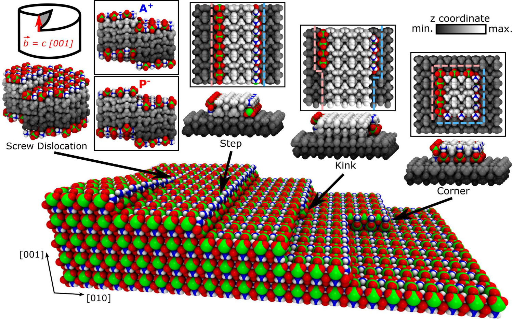
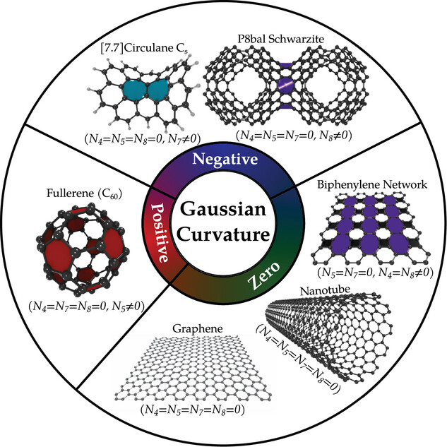

Research
Atomistic Materials Degradation
This research aims to connect quantum chemical calculations and transition state theory to identify the rate-limiting steps of many observed chemical degradatin processes, such as water-driven stress corrosion craking and thermal decomposition and sublimation multi-component perchlorate crystals. Additionally, First-principles and density functional tight-binding calculations combined with metadynamics are used to investigate such rare events at the atomic scale.
- L. C. Felix, E. S. Penev, M. Sun and B. I. Yakobson, J. Phys. Chem. Lett., XXXX, XXX, XXX-XXX (2026).
- L. C. Felix, Q.-K. Li, E. S. Penev, and B. I. Yakobson, Materials, 18(3), 538 (2025).

Mechanical Response of Carbon Nanomaterials
My earlier research focused on the mechanical response of carbon nanomaterials and architected carbon structures. These studies combined density functional theory, molecular dynamics, and mechanical modeling to understand deformation, fracture, thermal stability, impact response, and energy absorption from the atomistic to the macroscale.
- L. C. Felix, C. F. Woellner, and D. S. Galvao, Carbon, 157, 670–680 (2020).
- L. C. Felix, V. Gaál, C. F. Woellner, V. Rodrigues, and D. S. Galvao, MRS Adv., 5(33–34), 1775–1781 (2020).
- L. C. Felix, R. M. Tromer, P. A. S. Autreto, L. A. Ribeiro Junior, and D. S. Galvao, J. Phys. Chem. C, 124(27), 14855–14860 (2020).
- L. C. Felix and D. S. Galvao, Phys. Chem. Chem. Phys., 24(22), 13905–13910 (2022).
- L. C. Felix, R. M. Tromer, C. F. Woellner, C. S. Tiwary, and D. S. Galvao, Physica B Condens. Matter, 629, 413576 (2022).
- L. C. Felix, R. S. Ambekar, C. F. Woellner, B. Kushwaha, V. Pal, C. S. Tiwary, and D. S. Galvao, J. Phys. D: Appl. Phys., 55(46), 465301 (2022).
